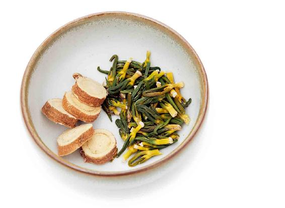
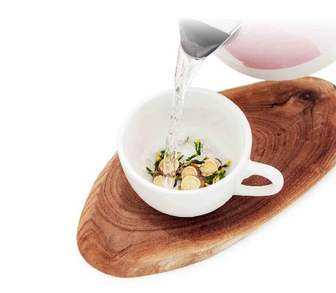
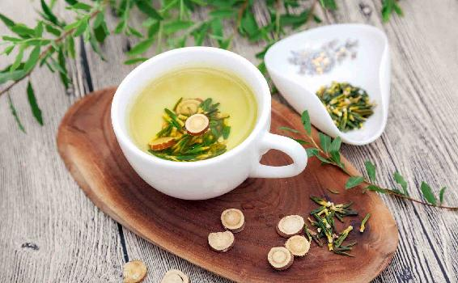
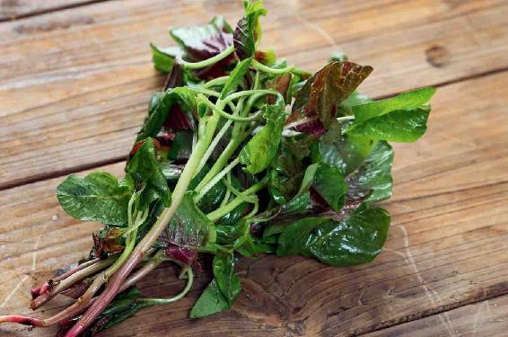

小暑节气开始，我们进入了夏天的最后一个月——季夏。
古人用孟、仲、季来代表第一、第二、第三，所以春天的第三个月也称为季春，秋天的第三个月称为季秋。
也有人把季春称为暮春，季秋称为晚秋。在一冬一夏的最后一个月——季冬和季夏，通常又把它们称为深冬和盛夏。
盛夏是夏天最热的一个月。之前的仲夏，那时候正逢夏至节气，虽然太阳到了北边的顶点，但还不算最热，要等到大地都被晒暖了，地气往上蒸腾，这才是一年中最热的时候。因此，小暑也是历年最容易出现最高气温的节气。
每到盛夏的时候，学生都要放暑假，在欧洲一些国家，成人也会放长假，这都是非常有道理的。
古人早就认为，盛夏这个月份是不能够做大事情的，国家都不举行大的活动、大的典礼，一切盛大的活动都不去办。为什么呢？是怕影响、动摇夏天的生养之气。
因为夏天是长的时节，要集中精力来长。如果这时候分神、分心去做一些复杂的事情，就会影响到人体在夏天的长，影响到夏天的生养之气。
小暑节气，还是一个不适宜剧烈活动的时节，因为这时候的天气往往会比大暑更热。
俗语说：“小暑大暑，上蒸下煮。”这句话是非常形象的。在小暑节气，天地间就像一个汗蒸房，又热又湿，这时人就像在蒸桑拿，全身的毛孔、腠理都打开了。
虽然这时候人会大量出汗，热得难受，但也是给身体排毒非常好的时机。
趁着全身的毛孔、腠理都打开的时候来排毒，会非常容易和顺畅。所以从小暑节气开始，我们借助天时来让身体排毒，就能达到事半功倍的效果。
人体的毒有多种，在小暑节气可以重点对抗三种毒：第一是血毒；第二是火毒；第三是光毒。
对抗这三大毒，所用的方法也不相同。
对抗火毒，用莲子心甘草茶；对抗光毒，用胡萝卜番茄汁；对抗血毒，用银花甘草茶和松花蛋红苋汤。
衡量一个人健康与否，其中有一个标准就是看其排毒通道是否畅通。
人体有三大排毒通道：出汗、大便、小便。
通过这三大排毒通道，我们每天都在排出毒素。但现在很多人的这三大排毒通道，都或多或少不太畅通。毒素不能顺利地排出，就会进入血液中循环全身，使人体出现一些亚健康的症状。
而夏天天地间的阳气，已经帮助我们打通了毛孔，这时候通过出汗来排毒，往往是比较畅通的。
因此，盛夏时节，我们要重点打通的是其他两大排毒通道——大便、小便。
如何通过膀胱系统，也就是通过小便来排毒？我们可以用银花甘草茶和莲子心甘草茶来完成这项工作。如何通过肠道系统，也就是大便来排毒？我们可以用松花蛋红苋汤来完成这项工作。
夏天会经常出现雷雨天气，而雷雨天气之前往往比较闷热，一些体虚的朋友这时候会感到很不舒服，会胸闷、气短、口干舌燥、浑身酸软，感觉特别疲劳，不想动，也不想吃东西，心里很烦、很热，晚上翻来覆去总是会醒来。
这种情况下，我建议您要给自己的身体多补气和养阴。前面我分享的二子延寿茶——枸杞子五味子茶，不妨经常喝一点儿，既可以养心脏，滋养心阴，又可以防止身体的阳气外泄。
其实在盛夏时节，无论男女都适合多喝一点儿枸杞子五味子茶来滋养身体。
最后，我想给您分享一首唐代诗人元稹（zhěn）所写的一首小暑节气的诗歌，在这首短短的诗里，他把小暑节气的三个物候都给描述了。
这诗里把小暑的特点讲得很到位：雷雨天气多，湿气重，庭院长满青苔（人体也同样易被湿气所困）。同时讲了小暑三候：一候温风至；二候蟋蟀居宇；三候鹰始鸷。
注：牖（yǒu），鹯（zhān）
小暑节气的第一候——温风至，就是热风来了。
夏天的天时是属火的，而在小暑节气的时候热风来了，就表明带来的火气非常旺盛，而火盛就会变成毒。
火性是炎上的，就是往上走，所以身体中了火毒之后，往往可以从我们的头、面部来看。有的朋友眼睛发红；有的朋友脸上长青春痘，而且是那种红红的，摸起来有点硬硬的、痛痛的；有的朋友舌头上长溃疡；有的朋友觉得特别口干舌燥；还有的朋友觉得心烦意乱，睡不着觉。
如果上部的火再严重，它就往下走了，具体的表现为：小便量变少，颜色偏黄，甚至有点儿发红。
夏天的火是以心火为主的，身体有一个地方是可以看出心的问题，那就是舌头——舌为心之苗。
如果有心火，那么您对着镜子看一看舌尖，肯定是红红的。
在夏天，当心火旺盛到变成一种火毒的时候，可以通过喝莲子心甘草茶来解除它。喝这道茶饮可以生津止渴。

原料：莲子心2克、甘草3克。
做法：

把莲子心和甘草放入茶壶，用沸水冲泡一下，倒掉。
再次冲入沸水，闷10分钟以后饮用。
允斌叮嘱：
1. 莲子心和甘草都可以在药店买到，莲子心在茶叶店也可以买到。用拇指、食指、中指轻轻地捏起一小撮莲子心，差不多就是2克的量；而3克甘草的量，大概是6小片。
2.这道茶饮是可以反复冲泡的，一直到没有味道为止。
3. 莲子心很苦，加一点甘草就调和了它的苦味，让这道茶有一种苦中带甜的感觉。

莲子心虽然是寒凉的，但它并不凉胃（胃酸过少的人单独喝莲子心可能胃会有点不舒服，要搭配来喝），而是专门去心火的，所以夏天火毒重的朋友可以稍微喝一点儿，不要喝太多，只要心火去掉就可以停喝了。因为莲子心寒凉，不适合长期饮用。
这道茶饮除了清心火，还有一个调理夏天心烦、失眠的作用。因为莲子心很擅长把心火往下引，它并不是通过自身的寒凉像一盆水那样来“浇灭”心火，而是把心火下引到肾。同时，它也会把肾脏系统的水液，上引到心，当然这是一个比方，实质上就是用肾阴来滋养心阴。这样一来，就达到了传统养生所说的交通心肾的目的，就是让心和肾来互相滋养对方，这样就可以平息心火了。
对于由心肾不交导致的失眠，这道茶饮也有很好的调理作用。
有一次我在电视台录节目，有观众问：“老师，既然是身体有火，那么多喝水不就行了吗？”
很多朋友都以为多喝水就可以去火，这是错误的想法。
当身体有心火的时候，靠喝水是去不掉的。因为我们喝下去的水，它走的是消化道，而夏天的心火，它是会直接入血的，它走的是心，所以靠喝水是没有办法“浇灭”它的。
当身体有了火毒，特别是头、面部出现火毒的症状后，您可以马上来喝莲子心甘草茶。当火毒祛除之后，就可以停喝了，不要觉得它的效果很好，就一直坚持喝。莲子心单独吃是寒凉的，如果想长期得到莲子心的功效，吃带心莲子比较好。
您可以拿起一颗莲子观察——莲子肉很饱满，里面只有一根细细的莲子心，这样的一个果肉与心的比例，才是平和的，日常饮食怎么吃都可以。
小暑节气的时候，我们可以来吃一个食方，就是松花蛋红苋汤。它需要三种材料，第一是松花蛋，第二是红苋菜，第三是大蒜。红苋菜就是红色的苋菜。
苋菜是有不同颜色的。市场上的苋菜，有白色的，有红色的，它们的功效也是有微微区别的。
白色的苋菜偏于通气，而红色的苋菜偏于通血。总的来说，苋菜是疏通我们身体排毒通道的。小暑节气您就食用红苋菜，能帮助身体排血毒。如果您实在买不到红苋菜，用白苋菜代替也有相近的功效。
按古人总结的功效，叫作“苋通九窍”。
什么是九窍？两只眼睛，两个鼻孔，两个耳朵眼，嘴，前后二阴（尿道口、肛门）处。
“苋通九窍”，就是让身体对外开口的地方——排毒的通道能够畅通。
夏天的时候，人体的阳气往外泄，为了帮助排毒，这时就需要通窍，只有九窍通畅才能更顺畅地排毒。
有些便秘的朋友会发现，吃了苋菜以后，上厕所很畅快，因为它可以让我们的消化系统和大小便都能保持畅通，帮助身体排出肠毒。
当您在购买苋菜的时候，最好是连苋菜根一起也买回来，因为苋菜根通肠的效果更好。
在这道汤里，买的嫩苋菜一定要带上根，才有疗效。如果您在市场上看到了老的苋菜，甚至是带子的苋菜，也可以买一些回来。
苋菜的子有明目的功效，对老年人很适合。
您也可以用苋菜子来炖猪肝吃，可以预防老年白内障和青光眼。
您看“苋”字，非常有意思，上面一个草字头，下面一个看见的“见”，所以这是可以让人的眼睛看见东西的植物。
1.松花蛋的作用
这道汤中的第二种原料，就是松花蛋。松花蛋也就是皮蛋。我们在买松花蛋的时候，要注意买无铅的松花蛋。因为做松花蛋的时候，所用到的材料可能会使松花蛋含铅。
松花蛋的作用是什么呢？在这道汤里，它是可以解人体血液中的烟毒和酒毒的，同时也解血液中的热毒。所以用松花蛋来搭配红苋菜，解毒的效果会更好。
2.大蒜的作用
大蒜也是可以清毒的食物，虽然它是热性的，但它可以帮助人清除血液中的一些毒素，也可以帮助清除血脂。用凉性的红苋菜和松花蛋，再配上一点点热性的大蒜，这道菜的效果就会更加平衡了。

3.松花蛋红苋汤还要配盐和油
这道食方在制作的时候，需要两样调料，一个是油，一个是盐。如果您可以吃动物油的话，我建议您选择猪油。因为这道菜用猪油，效果会更好。
实际上，动物油有很好的营养价值。其中，猪油主要是润滑肠道的，可以帮助肠道来排毒。
在这道汤里，油的主要作用就是辅助苋菜和松花蛋来排毒。特别是用猪油来烹调苋菜，您会发现苋菜吃起来会更加地嫩滑，更香了。如果不用猪油的话，做出的苋菜则多少会让人感觉有一点粗糙。
苋菜是通的，通身体的窍，有轻微的滑胎作用。如果您是怀孕四个月以内的女性朋友，这道食方您就最好不要吃了，这样更加保险。因为有些女性在孕早期有先兆流产的症状，最好是在怀孕四个月以后再吃苋菜。
读者评论：喝松花蛋红苋汤，大便非常通畅
KL快乐人生：自从小暑以来，我家每天早餐都喝松花蛋红苋汤，孩子每年夏天身上都长的红疹子不见了，94岁的老公爹以前一般都是三四天大便一次，现在一天大便一次。
阿杜：入伏后，我们全家都很喜欢喝松花蛋红苋汤，普遍的感觉是大便非常通畅。